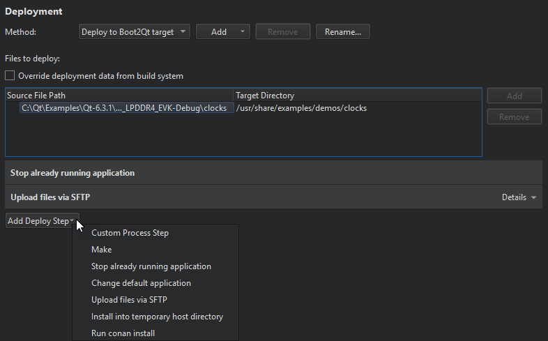

Deploying to Boot2Qt
You can specify settings for deploying applications to Boot2Qt devices in the project configuration file and in Projects > Run Settings > Deployment.

The deployment process is described in more detail in Deploying to Remote Linux.
Launching Applications on Boot
In addition, to have your application launch on boot, select Add Deploy Step > Change default application > Set this application to start by default.